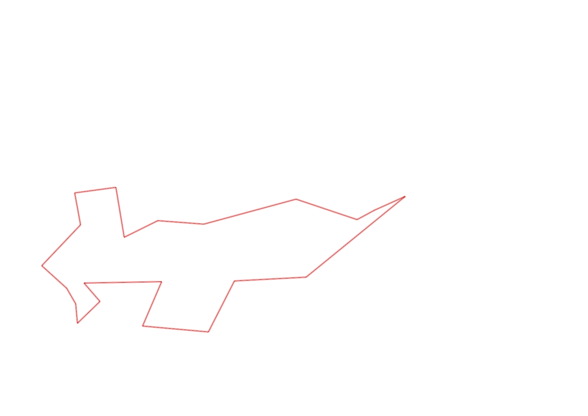
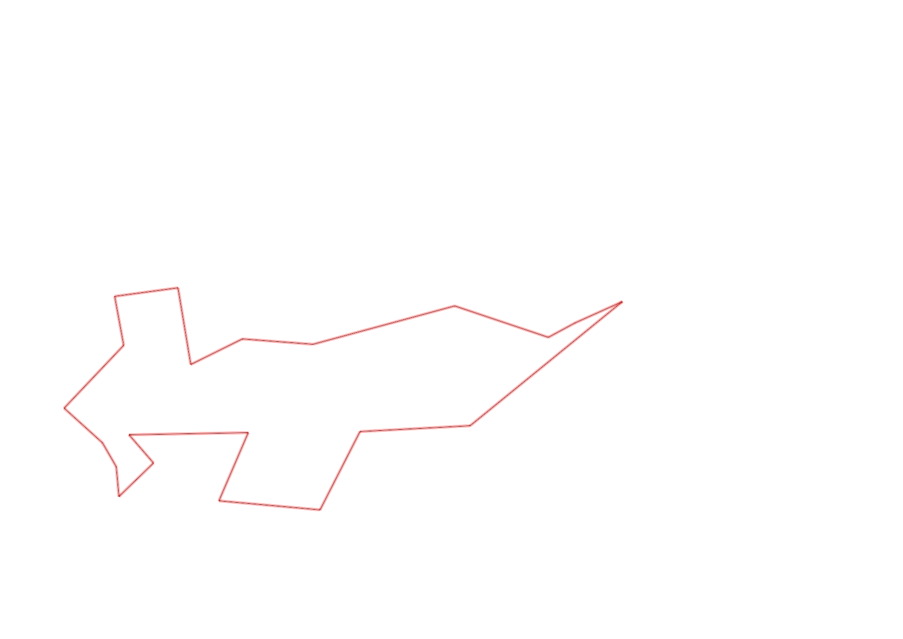

| Control |
Points |
Time Punched |
Distance |
Your Time |
Pace |
Place |
Fastest Time |
Median Time |
% Behind Fastest |
| 126 |
20 |
|
0.17 |
0:00:49 |
04:48 |
4 / 10 |
0:00:43 |
0:00:53 |
13% |
| 130 |
30 |
|
0.14 |
0:00:23 |
02:44 |
6 / 19 |
0:00:00 |
0:00:33 |
-% |
| 63 |
60 |
|
0.18 |
0:01:18 |
07:13 |
3 / 5 |
0:01:13 |
0:01:18 |
6% |
| 32 |
30 |
|
0.15 |
0:00:51 |
05:40 |
9 / 27 |
0:00:36 |
0:00:56 |
41% |
| 44 |
40 |
|
0.12 |
0:01:04 |
08:53 |
5 / 29 |
0:00:52 |
0:01:49 |
23% |
| 53 |
50 |
|
0.2 |
0:02:43 |
13:35 |
18 / 26 |
0:01:31 |
0:02:15 |
79% |
| 69 |
60 |
|
0.12 |
0:01:03 |
08:45 |
7 / 29 |
0:00:45 |
0:01:18 |
40% |
| 71 |
70 |
|
0.06 |
0:01:15 |
20:50 |
14 / 25 |
0:00:48 |
0:01:13 |
56% |
| 40 |
40 |
|
0.07 |
0:01:52 |
26:39 |
5 / 9 |
0:00:40 |
0:01:52 |
180% |
| 41 |
40 |
|
0.11 |
0:01:55 |
17:25 |
17 / 20 |
0:00:28 |
0:01:07 |
310% |
| 54 |
50 |
|
0.09 |
0:01:30 |
16:40 |
5 / 8 |
0:00:57 |
0:01:28 |
57% |
| 60 |
60 |
|
0.28 |
0:03:53 |
13:52 |
2 / 3 |
0:01:32 |
0:03:53 |
153% |
| 59 |
50 |
|
0.17 |
0:08:33 |
50:17 |
5 / 5 |
0:02:02 |
0:04:13 |
320% |
| 61 |
60 |
|
0.24 |
0:03:46 |
15:41 |
15 / 19 |
0:02:14 |
0:03:16 |
68% |
| 42 |
40 |
|
0.21 |
0:03:42 |
17:37 |
8 / 14 |
0:02:19 |
0:03:34 |
59% |
| 37 |
30 |
|
0.26 |
0:03:57 |
15:11 |
5 / 9 |
0:02:45 |
0:03:57 |
43% |
| 49 |
40 |
|
0.46 |
0:04:01 |
08:43 |
1 / 2 |
0:04:01 |
0:04:26 |
0% |
| 64 |
60 |
|
0.12 |
0:01:14 |
10:16 |
8 / 8 |
0:00:53 |
0:00:55 |
39% |
| 48 |
40 |
|
0.07 |
0:03:04 |
43:48 |
9 / 9 |
0:00:34 |
0:00:47 |
441% |
| 47 |
40 |
|
0.23 |
0:03:01 |
13:06 |
3 / 4 |
0:01:44 |
0:02:35 |
74% |
| Finish |
0 |
|
0.34 |
0:08:04 |
23:43 |
4 / 4 |
-1 day, 23:10:33 |
0:03:22 |
-99% |
Total Distance Covered: 3.79km
Points Scored: 910
Late Penalty: 0
Final Score: 910
Total Time: 0hours 57minutes 58seconds
Efficiency: 240.11 points/km
 
